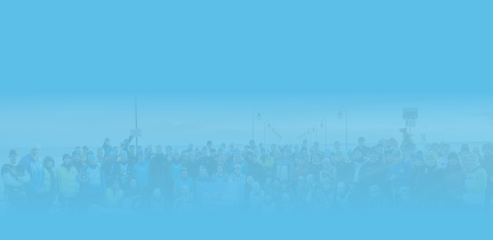
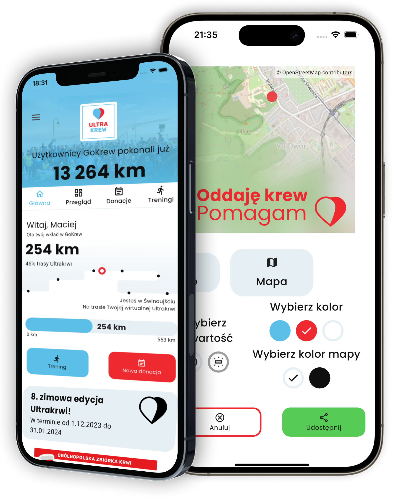

Kliknij „Rozpocznij trening” i zbieraj kilometry podczas spaceru lub biegu. Śledź swój postęp na mapce w aplikacji, która pokazuje w jakim mieście byś był/a, gdybyś pokonywał/a trasę Ultrakrwi, czyli 550 km wzdłuż polskiego wybrzeża Bałtyku.
Dowiedz się więcej czym jest Ultrakrew na www.ultrakrew.pl i śledź nas na Facebooku.
Utwórz swój osobisty dziennik krwiodawcy. Dodawaj donacje i śledź, kiedy następnym razem możesz oddać krew. Aplikacja wyśle Ci też powiadomienie, kiedy to nastąpi. Jeśli jesteś już stałym krwiodawcą lub stałą krwiodawczynią, w zakładce „Przegląd” znajdziesz Krwiostory czyli autorski pomysł na przedstawienie Twojej historii krwiodawstwa!
Firmy Wspierające otrzymują od Ultrakrwi dostęp do panelu dla firm, dzięki któremu pracownicy razem pracują na wynik swojej firmy i swoich zespołów. Zbieranie kilometrów jest bardzo proste - po prostu wychodzisz z domu! Firmy mogą organizować konkursy dla pracowników, motywując ich do działania5.
W aplikacji GoKrew jest kompletna lista centrów krwiodawstwa w Polsce, na której znajdziesz nie tylko adres, ale również email, telefon czy odnośnik do strony internetowej każdego centrum. Pozwól aplikacji znaleźć to najbliżej Ciebie i nie trać czasu na szukanie potrzebnych informacji!
Skontaktuj się z nami pod adresem gokrew@ultrakrew.pl, jeśli masz jakieś pytania lub chcesz zostać partnerem.